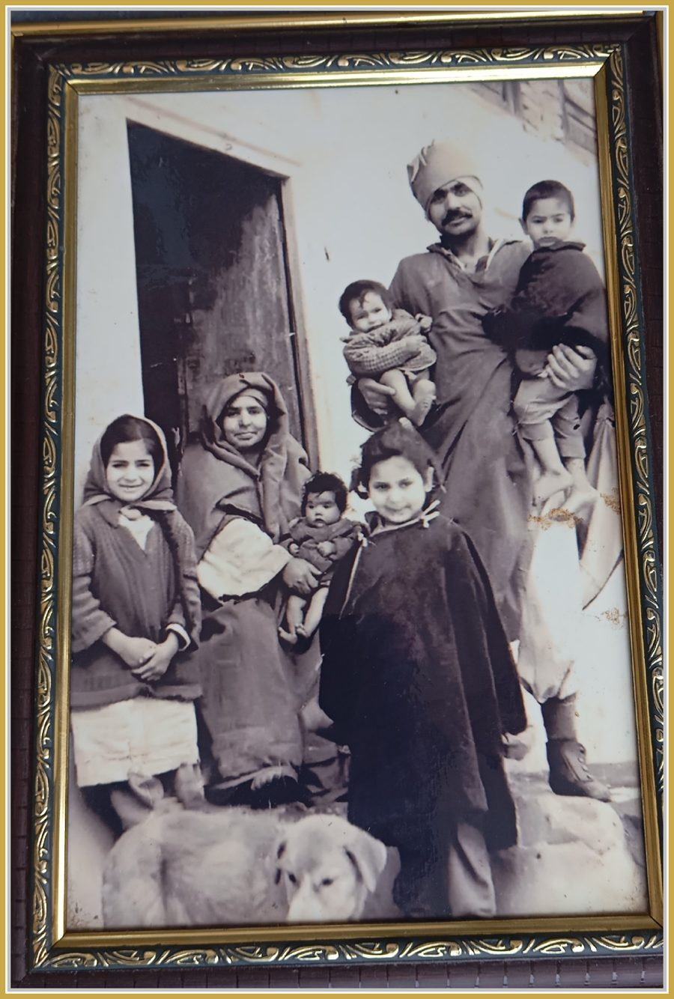

Kashmir and Beyond
A Life Journey of Memory, Loss, Resilience, and Hope
Some journeys are measured in miles. Others are measured in memories.

Kashmir and Beyond is my attempt to preserve a world that lives vividly in my heart — a world of family, traditions, mountains, orchards, festivals, friendships, and values that shaped my childhood in Kashmir. It is also the story of displacement, rebuilding, and discovering new beginnings without forgetting one's roots.
Born in the serene village of Chandpora, Harwan, I spent my early years amidst the beauty of Kashmir. The events of 1990 forced my family, like hundreds of thousands of other Kashmiri Pandits, to leave our ancestral home and begin life again under difficult circumstances. Yet this memoir is not only about loss. It is equally about resilience, gratitude, service, and hope.
Through the metaphor of the Four Houses, the book traces the major chapters of my life — from my ancestral home in Kashmir to rebuilding life in Delhi, professional service across India, and finally a peaceful retirement in Bengaluru. Every house represents not merely a place to live, but a stage in life's journey, carrying its own memories, lessons, and dreams.
Alongside personal experiences, the memoir celebrates the rich cultural and spiritual heritage of Kashmir. It explores the wisdom of Kashmir Shaivism, the teachings of great masters such as Abhinavagupta, the traditions of Kashmiri Pandits, and the enduring values that continue to inspire future generations.
Professionally, I devoted more than three decades to Government accounting and public service. Retirement has opened a new chapter — one of writing, learning, exploring artificial intelligence, and contributing to the preservation of Kashmir's cultural heritage.
This website is more than a personal archive. It is a place to share stories, research, reflections, and conversations. I hope readers from every walk of life will find something meaningful here — whether they seek history, inspiration, or simply the reminder that even after profound loss, life can be rebuilt with dignity, purpose, and hope.
Thank you for visiting. I warmly welcome your thoughts, memories, and suggestions as this journey continues.
Contents
- Foreword
- Preface
- Invocation
- An Introduction
- Chapter 1: The First House – The Roots
- Chapter 2: My Parents
- Chapter 3: The Second House – Childhood and Youth
- Chapter 4: Education and the Gathering Storm
- Chapter 5: Life in Exile
- Chapter 6: What We Lost
- Chapter 7: Questions and Solutions That Arise
- Chapter 8: The Inheritance – Cultural and Spiritual Foundations
- Chapter 9: The Third House – Delhi
- Chapter 10: The Fourth House
- Chapter 11: Bugien – Stories from a Vanished World
- Chapter 12: Articles on Spiritual Leaders and Heritage
- Chapter 13: Lessons from a Life Journey
- Glossary
- Recurring Family Members
- Timeline of Key Events
- Notes
- Select Bibliography
Bugien gathers twenty-four short stories drawn from my own life and the wider memory of our village and community, along with articles on the spiritual and philosophical heritage of Kashmir.
— Manoj Bhat